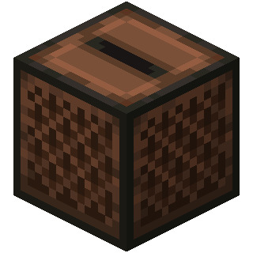
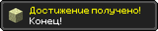

Кто я
Ученик, который учится делать реальные проекты и постепенно собирает своё портфолио.


Загрузка...
Игрок 01
Привет! Я изучаю программирование, создаю сайты, пробую Python, работаю с Roblox Studio и люблю Minecraft. Этот сайт — моё портфолио для конкурса CAP Education «Обо мне».
Всё началось с сильного интереса к программированию. Сначала были курсы на YouTube, первые попытки повторять за авторами и желание делать что-то своё. Эта мотивация перешла и к моей маленькой команде — Расулу и Инабат, сыну и дочери моего дяди.
Мой дядя разбирается в программировании как свои пять пальцев. Первым рабочим инструментом стал мой старый ноутбук: нужные программы на нём работали, но с лагами. Скрипты писались буквально с молитвой, зато мы не сдавались и вместе сделали игру в Roblox Studio.
Дядя увидел наш интерес и поверил в наше будущее. Он записал нас на CAP Education, а позже купил мне мощный компьютер. Мы вместе собрали его, установили Windows, и обучение продолжилось уже без тех самых лагов.
На курсе Python Junior есть Pygame и Turtle. А ещё стало понятно, насколько важны хорошие менторы: они вежливо объясняют, помогают исправлять ошибки, проводят отдых и викторины, поэтому учиться становится намного интереснее.
Формат Python Junior
Навык Lua · Python · HTML
Стиль Minecraft portfolio
Квест конкурса
Ученик, который учится делать реальные проекты и постепенно собирает своё портфолио.
Стать сильнее в разработке, научиться делать игры и полезные программы.
После нашей игры в Roblox Studio дядя увидел мой интерес и записал меня на курс.
Менторы CAP Edu объясняют понятно, помогают исправлять ошибки и поддерживают на занятиях.
Сначала был старый ноутбук с лагами, а теперь я собираю свою программу и учусь дальше.
Minecraft, Roblox Studio, игры, идеи для проектов и эксперименты с кодом.
Сайты, мини-игры, Python-проекты и всё, что показывает мой прогресс.
После загрузки проекта сюда добавлю ссылку на репозиторий.
Цель
Я хочу научиться создавать проекты, которыми можно пользоваться: сайты, игры, и программы на Python. Моя цель — не просто смотреть уроки, а собирать свои идеи до рабочего результата.
Путь А → Б
Старый ноутбук, лаги и первые скрипты, которые я писал почти с молитвой.
Курс CAP Education, Python, Апгрейд мозга, Turtle и свой сайт-портфолио.
Больше игр, GitHub, деплой и проекты, которыми можно гордиться.
Инвентарь
Этот сайт-портфолио в стиле Minecraft: HTML, CSS и JavaScript.
Небольшие программы и задания, которые помогают мне прокачивать логику.
Первая командная игра вместе с Расулом и Инабат — проект, с которого началась история.
Финальный этап
Следующий шаг — загрузить сайт на GitHub и добавить сюда настоящую ссылку на репозиторий. Потом останется записать видео-обзор на 1–2 минуты.
Вернуться наверх